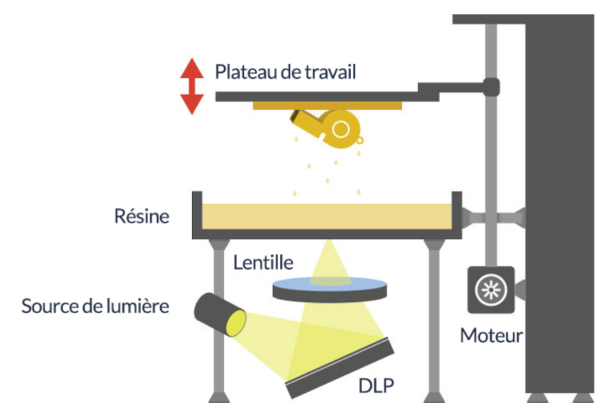

Réaliser des modèles 3D#
Réaliser ses propres modèles grâce à des logiciels de CAO#
solidworks#
SOLIDWORKS est un logiciel propriétaire de conception assistée par ordinateur 3D fonctionnant sous Windows. C'est un logiciel développé par Dassault Systèmes.
fusion 360#
Fusion 360 d'Autodesk est un logiciel CAO polyvalent qui propose toutes les fonctionnalités nécessaires au développement de produits, depuis la phase de conception à la vérification pour fabrication avec des outils de fabrication traditionnelle ou numérique comme l'impression 3D. Il est disponible sous windows et sous Mac.
FreeCAD#
Comme l’indique son nom FreeCAD est gratuit. Pour ce logiciel de modélisation 3D paramétrique, aucune autre expérience n’est nécessaire, il peut être utilisé immédiatement pour créer des modèles 3D complexes. Le logiciel s’intéresse particulièrement aux projets d’ingénierie ou d’architecture. Il peut être utilisé par n’importe qui : utilisateurs à domicile, concepteurs, programmeurs et même éducateurs. Il fonctionne sur Windows, Mac ainsi que Linux.
Blender#
Blender est un logiciel open source largement utilisé. Il propose un catalogue incroyable d’outils et de logiciels pour créer des modèles impressionnants tout en laissant libre cours à votre imagination. Il peut être utilisé sur Mac, Windows et Linux. Cependant, si vous souhaitez utiliser Blender, il est conseillé d’avoir une petite expérience préalable avec les logiciels 3D.
Obtenir des modèles 3D#
Vous pouvez télécharger un objet 3D sur un site qui rend accessible gratuitement des dizaines de milliers de modèles tridimensionnel Vous y trouverez peut-être votre objet ou tout simplement des idées. Voici quelques sites :
Différents types d'imprimante:#
les imprimantes à filament#
Les filaments utilisés dans l'impression 3D sont les thermoplastiques, qui sont des plastiques qui fondent plutôt lorsqu'ils sont chauffés. Les thermoplastiques peuvent être façonnés et moulés lorsqu'ils sont chauds et se solidifier lorsqu'ils sont refroidis. Le filament est introduit dans une chambre de chauffage dans l'assemblage de l'extrudeuse de l'imprimante, où il est chauffé à son point de fusion, puis extrudé à travers une buse métallique. Lorsque l'assemblage de l'extrudeuse se déplace, tracer un chemin programmé dans un fichier d'objet 3D pour créer, couche par couche, l'objet imprimé.
Les imprimantes à résine#
Les imprimantes à résine forment des pièces à partir de résine liquide qui durcit et devient solide lorsqu'elle est exposée à la lumière UV. Semblables aux imprimantes à filament, les imprimantes à résine construisent des pièces en couches. La différence est qu'il se solidifie lorsqu'une pièce est exposée à la lumière. Chaque tranche à un motif de lumière UV solidifiera la résine aux endroits souhaités. Il y a trois types d'imprimantes 3D à résine courantes :
- DLP (traitement numérique de la lumière) ;
- SLA (stéréolithographie) ;
- MSLA (microstéréolithographie).
Ces technologies diffèrent dans la façon dont elles durcissent la résine.
Pour les imprimantes DLP, une fois que le modèle 3D est envoyé à l’imprimante, une cuve transparente de polymère liquide appelé photopolymère ou plus grossièrement résine, est exposée à la lumière d’un projecteur DLP dans des conditions de lumière sûre.
Ce projecteur à écran numérique va projeter une image de la couche sur l’ensemble de la plateforme de fabrication, grâce à des miroirs. La lumière est réfléchie sur une matrice de micro-miroirs, un masque dynamique consistant de miroirs microscopiques disposés dans une matrice sur une puce semi-conducteur. Le déplacement rapide de ces minuscules miroirs entre les lentilles qui dirigent la lumière vers le fond du bac où un dissipateur thermique définit les coordonnés où la résine liquide sera polymérisée dans une couche donnée. La résine une fois exposée va donc durcir et la plaque de construction (plateau de travail) sur lequel la pièce repose se déplace vers le bas. Après cela les photopolymères sont une fois de plus exposés à la lumière. La pièce se construit à l'envers sur le plateau, couche par couche.

Les imprimantes SLA utilisent un laser qui trace un chemin à travers la résine. À l'endroit où le laser frappe la résine, la résine durcira et se solidifiera. De l'extérieur, ces imprimantes sont très similaires.
Depuis l'essor de l'impression basée sur LCD (MSLA), les prix des systèmes d'impression 3D à base de résine ont baissé au niveau des imprimantes FDM. C'est pourquoi la plupart des imprimantes à résine à moindre coût utilisent presque la même technologie LCD / MSLA.
Comparaison entre les deux#
Les imprimantes à filament fonctionnent bien pour produire des pièces aux propriétés thermoplastiques et sont souvent des pièces plus grandes. Les imprimantes à résine excellent dans la production de détails fins et peuvent imprimer beaucoup plus précisément sur de petites pièces, mais utilisent de la résine thermodurcissable. Il y a quelques facteurs plus importants à considérer lors du choix de ces technologies qui conviennent le mieux à vos besoins spécifiques.
Les étapes pour utiliser une imprimantes 3D#
Étape 1 : préparer l’impression 3D#
Ouvrez votre fichier .stl ou .obj grâce à un logiciel d’impression 3D fourni avec votre imprimante 3D (il pourrait être comparé à votre logiciel d’imprimante papier).
Vous pourrez alors visualiser votre objet et si besoin le déplacer sur la plateforme (zone d’impression de votre machine). Avec ce logiciel, il vous sera possible aussi d’agrandir ou diminuer la taille d’impression de votre objet. C’est aussi avec ce logiciel que vous pouvez estimer votre temps d’impression. Ce temps pourra varier en fonction de paramètres qu’il vous sera proposé de modifier :
- la matière du filament avec laquelle vous imprimerez votre objet ;
- la qualité ou finesse de votre impression ;
- l’ajout de support d’impression pour les objets complexes.
Il existe une multitude de logiciels pour imprimer en 3D, compatibles avec la majorité des imprimantes. Ces logiciels sont la majeure partie du temps en téléchargement libre et gratuit sur Internet. En voici quelques exemples :
Il est important de comprendre que c’est l’une des étapes les plus importantes à maîtriser. Une impression 3D mal configurée dans le logiciel d’impression 3D peut faire que vos temps d’impression doublent, ou que votre objet ne s’imprime pas ou très mal. Il existe les réglages par défaut en fonction de la matière que vous utilisez. Je vous recommande vivement d’utiliser ces réglages dans un premier temps.
se connecter et préparer votre imprimante 3D#
Cette étape peut être comparée à tout point de vue à l’impression papier.

Il faut connecter votre imprimante à votre ordinateur. Il existe une multitude de façon de se connecter: câble USB, carte SD, WiFi ….
Il faut placer par exemple votre bobine de matière sur son support, puis insérer le filament dans l’extrudeur.
Il faut lancer l’initialisation de votre machine.
Il existe aujourd’hui une quantité faramineuse de tutoriels vidéos sur le sujet.